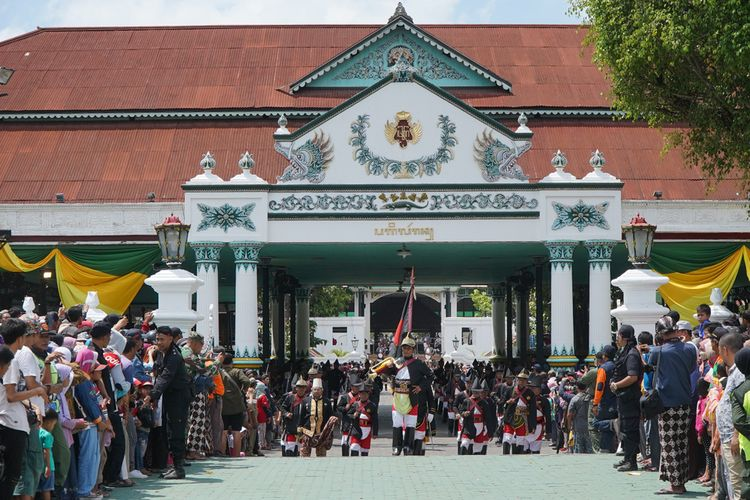

Tari Kecak
Kecak Dance is a traditional Balinese dance famous for the "cak" sounds produced by a chorus of male dancers.
Originating from the Balinese epic, Ramayana, this mesmerizing dance performance often depicts scenes from the ancient Hindu tale,
accompanied solely by vocal chants and rhythmic movements.

Upacara Adat keraton
The traditional ceremonies at the Keraton (royal palace) in Yogyakarta, known as "upacara adat Keraton," are celebrated for their rich Javanese heritage.
They feature elaborate rituals, traditional attire, and majestic processions,
offering a glimpse into the refined customs and royal legacy of Yogyakarta.